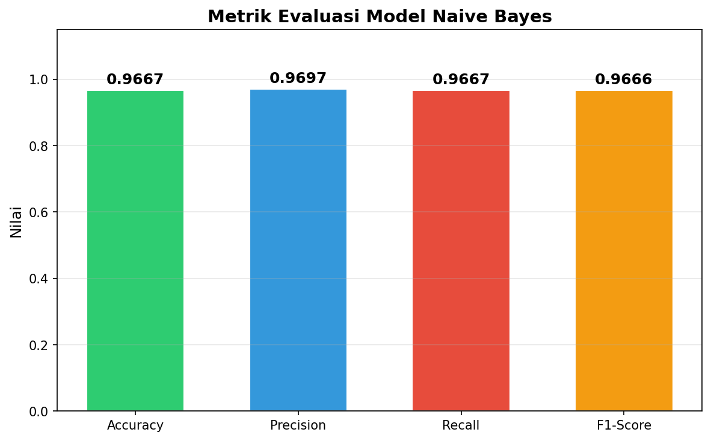
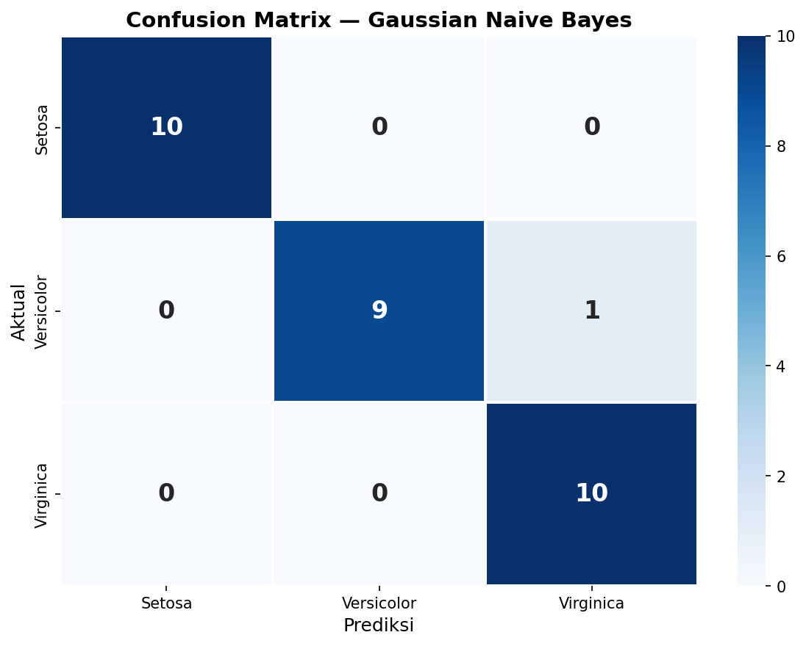
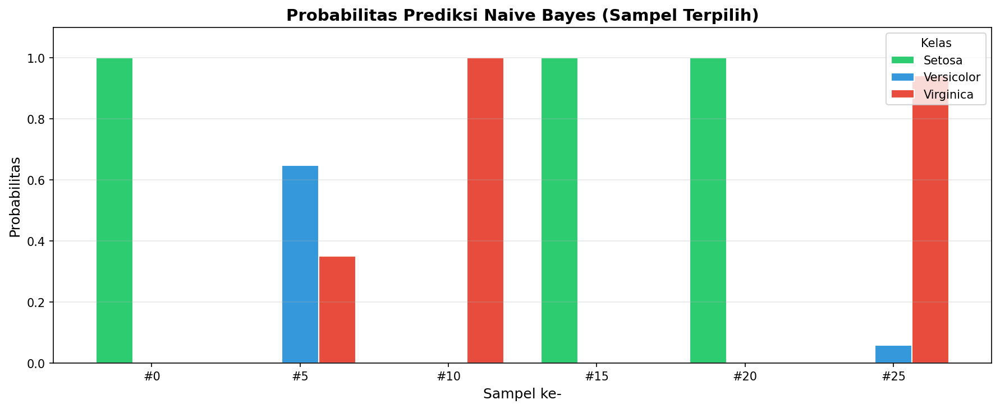

Tugas | Analisa Data Menggunakan Naive Bayes (A)#
NIM 240411100144#
Nama: Zakaria Mujur Prasetyo#
Mata Kuliah Penambangan Data A#
Dosen Pengampu: Mula’ab, S.Si., M.Kom#
Daftar Isi#
Pendahuluan#
Proyek ini bertujuan untuk melakukan analisis data menggunakan algoritma Naive Bayes Classifier dengan memanfaatkan library scikit-learn (sklearn) pada bahasa pemrograman Python. Berbeda dengan tugas UTS sebelumnya yang menggunakan KNIME Analytics Platform, kali ini saya membangun model classifier secara langsung melalui script Python.
Naive Bayes dipilih karena merupakan salah satu algoritma klasifikasi yang sederhana namun efektif, terutama untuk dataset dengan fitur yang saling independen. Algoritma ini didasarkan pada Teorema Bayes dan mengasumsikan bahwa setiap fitur berkontribusi secara independen terhadap probabilitas kelas.
Tujuan Tugas
Membangun model classifier Naive Bayes menggunakan Python (sklearn)
Melakukan eksplorasi dan visualisasi data
Melatih model Gaussian Naive Bayes pada dataset Iris
Mengevaluasi performa model: Accuracy, Precision, Recall, dan F1-Score
Mendemonstrasikan prediksi pada data baru
Teori Naive Bayes#
Bayesian Theorem#
Naive Bayes Classifier didasarkan pada Teorema Bayes yang menghitung probabilitas posterior suatu kelas berdasarkan data yang diamati. Dari training data X, posteriori probabilitas dari hypothesis H atau class, P(H|X), menggunakan Teorema Bayes:
Di mana:
\(P(C \mid \mathbf{X})\) = Posterior — probabilitas kelas C diberikan data X
\(P(\mathbf{X} \mid C)\) = Likelihood — probabilitas data X muncul pada kelas C
\(P(C)\) = Prior — probabilitas awal kelas C sebelum melihat data
\(P(\mathbf{X})\) = Evidence — probabilitas data X (konstan untuk semua kelas)
Asumsi Naive (Independensi)#
Disebut “Naive” karena algoritma ini mengasumsikan bahwa semua atribut/fitur dalam kondisi saling bebas (independent), yaitu tidak ada kebergantungan antar atribut:
Sehingga untuk klasifikasi, kita perlu memaksimumkan:
Gaussian Naive Bayes#
Jika fitur bernilai kontinu, probabilitas \(P(x_k \mid C_j)\) dihitung menggunakan distribusi Gaussian (distribusi normal) dengan mean \(\mu\) dan standar deviasi \(\sigma\):
Dalam implementasi sklearn, GaussianNB menghitung mean (\(\theta\)) dan variance (\(\sigma^2\)) untuk setiap fitur pada setiap kelas dari data training, kemudian menggunakan distribusi Gaussian tersebut untuk menghitung likelihood.
Keuntungan dan Kerugian#
Keuntungan |
Kerugian |
|---|---|
Mudah diimplementasikan |
Asumsi independensi fitur jarang terpenuhi sempurna |
Cepat dalam training dan prediksi |
Sensitif terhadap fitur yang berkorelasi |
Hasil baik di banyak kasus nyata |
Estimasi probabilitas bisa kurang akurat |
Efektif untuk dataset kecil maupun besar |
Tidak cocok jika hubungan antar fitur sangat kuat |
Informasi Dataset#
Sumber Dataset: Iris Dataset — sklearn.datasets
Dataset Iris merupakan dataset klasik dalam machine learning yang pertama kali diperkenalkan oleh Ronald A. Fisher pada tahun 1936. Dataset ini berisi pengukuran morfologi tiga spesies bunga iris.
Deskripsi Umum#
Atribut |
Keterangan |
|---|---|
Jumlah Sampel |
150 baris |
Jumlah Fitur |
4 fitur (semua numerik kontinu) |
Jumlah Kelas |
3 kelas |
Target / Label |
Setosa / Versicolor / Virginica |
Missing Values |
Tidak ada |
Distribusi Kelas#
Setosa : 50 sampel (33.3%)
Versicolor : 50 sampel (33.3%)
Virginica : 50 sampel (33.3%)
Total : 150 sampel
Dataset ini balanced (seimbang) — setiap kelas memiliki jumlah sampel yang sama.
Penjelasan Fitur#
No |
Fitur |
Satuan |
Deskripsi |
|---|---|---|---|
1 |
Sepal Length |
cm |
Panjang kelopak luar bunga |
2 |
Sepal Width |
cm |
Lebar kelopak luar bunga |
3 |
Petal Length |
cm |
Panjang kelopak dalam bunga |
4 |
Petal Width |
cm |
Lebar kelopak dalam bunga |
Statistik Deskriptif#
Statistik |
Sepal Length |
Sepal Width |
Petal Length |
Petal Width |
|---|---|---|---|---|
Mean |
5.84 |
3.06 |
3.76 |
1.20 |
Std |
0.83 |
0.44 |
1.77 |
0.76 |
Min |
4.30 |
2.00 |
1.00 |
0.10 |
Max |
7.90 |
4.40 |
6.90 |
2.50 |
Alasan Memilih Dataset Iris#
Saya memilih dataset Iris karena:
Dataset ini balanced sehingga tidak perlu teknik resampling
Semua fiturnya numerik kontinu — cocok untuk Gaussian Naive Bayes
Dataset ini sudah tersedia langsung di sklearn, sehingga tidak perlu download terpisah
Memiliki 3 kelas, sehingga lebih menantang dibanding klasifikasi biner
Tahapan Analisis#
Berikut adalah alur analisis yang saya lakukan secara keseluruhan menggunakan Python:
Load Dataset (sklearn) → Eksplorasi Data → Visualisasi → Split Data (80:20) → Training GaussianNB → Prediksi → Evaluasi → Visualisasi Hasil
Tools dan Library#
Library |
Versi |
Fungsi |
|---|---|---|
scikit-learn |
≥1.0 |
Model Naive Bayes, split data, metrik evaluasi |
pandas |
≥1.3 |
Manipulasi dan eksplorasi data dalam DataFrame |
numpy |
≥1.21 |
Operasi array dan numerik |
matplotlib |
≥3.5 |
Visualisasi grafik dan plot |
seaborn |
≥0.12 |
Visualisasi statistik (heatmap, dll) |
Referensi API sklearn Naive Bayes: https://scikit-learn.org/stable/api/sklearn.naive_bayes.html
💻 Import Library & Load Dataset#
import numpy as np
import pandas as pd
import matplotlib.pyplot as plt
import seaborn as sns
from sklearn.datasets import load_iris
from sklearn.model_selection import train_test_split
from sklearn.naive_bayes import GaussianNB
from sklearn.metrics import (
accuracy_score, precision_score, recall_score,
f1_score, confusion_matrix, classification_report,
)
# Load dataset Iris
iris = load_iris()
df = pd.DataFrame(data=iris.data, columns=iris.feature_names)
df['species'] = iris.target
df['species_name'] = df['species'].map(
{0: 'Setosa', 1: 'Versicolor', 2: 'Virginica'}
)
print(f'Jumlah sampel : {df.shape[0]}')
print(f'Jumlah fitur : {df.shape[1] - 2}')
print(f'Jumlah kelas : {df["species"].nunique()}')
print(f'Nama kelas : {list(df["species_name"].unique())}')
Output:
Jumlah sampel : 150
Jumlah fitur : 4
Jumlah kelas : 3
Nama kelas : ['Setosa', 'Versicolor', 'Virginica']
💻 Menampilkan 5 Data Pertama#
print(df.head().to_string(index=False))
Output:
sepal length (cm) sepal width (cm) petal length (cm) petal width (cm) species species_name
5.1 3.5 1.4 0.2 0 Setosa
4.9 3.0 1.4 0.2 0 Setosa
4.7 3.2 1.3 0.2 0 Setosa
4.6 3.1 1.5 0.2 0 Setosa
5.0 3.6 1.4 0.2 0 Setosa
💻 Statistik Deskriptif#
print(df.describe().to_string())
Output:
sepal length (cm) sepal width (cm) petal length (cm) petal width (cm) species
count 150.000000 150.000000 150.000000 150.000000 150.000000
mean 5.843333 3.057333 3.758000 1.199333 1.000000
std 0.828066 0.435866 1.765298 0.762238 0.819232
min 4.300000 2.000000 1.000000 0.100000 0.000000
25% 5.100000 2.800000 1.600000 0.300000 0.000000
50% 5.800000 3.000000 4.350000 1.300000 1.000000
75% 6.400000 3.300000 5.100000 1.800000 2.000000
max 7.900000 4.400000 6.900000 2.500000 2.000000
💻 Distribusi Kelas & Missing Values#
# Distribusi kelas
distribusi = df['species_name'].value_counts()
for kelas, jumlah in distribusi.items():
print(f' {kelas:12s} : {jumlah} sampel ({jumlah/len(df)*100:.1f}%)')
print(f' {"Total":12s} : {len(df)} sampel')
# Missing values
print(f'\nMissing values: {df.isnull().sum().sum()}')
Output:
Setosa : 50 sampel (33.3%)
Versicolor : 50 sampel (33.3%)
Virginica : 50 sampel (33.3%)
Total : 150 sampel
Missing values: 0
Eksplorasi Data#
Distribusi Fitur per Kelas#
Saya memvisualisasikan distribusi setiap fitur untuk melihat bagaimana setiap kelas bunga iris tersebar pada masing-masing fitur:
💻 Kode Visualisasi Distribusi Fitur#
fig, axes = plt.subplots(2, 2, figsize=(14, 10))
fig.suptitle('Distribusi Fitur Dataset Iris per Kelas', fontsize=16, fontweight='bold')
colors = {'Setosa': '#2ecc71', 'Versicolor': '#3498db', 'Virginica': '#e74c3c'}
for idx, col in enumerate(iris.feature_names):
ax = axes[idx // 2, idx % 2]
for species_name, color in colors.items():
subset = df[df['species_name'] == species_name]
ax.hist(subset[col], bins=15, alpha=0.6, label=species_name,
color=color, edgecolor='white')
ax.set_title(col.title(), fontsize=12, fontweight='bold')
ax.set_xlabel(col)
ax.set_ylabel('Frekuensi')
ax.legend()
plt.tight_layout()
plt.savefig('Assets/NaiveBayes/distribusi_fitur.png', dpi=150)
plt.show()
Output:

Dari histogram di atas, saya bisa melihat bahwa:
Setosa memiliki petal length dan petal width yang jauh lebih kecil dibandingkan dua kelas lainnya
Versicolor dan Virginica memiliki overlap yang cukup signifikan pada sepal length dan sepal width
Petal length dan petal width merupakan fitur yang paling diskriminatif untuk membedakan ketiga kelas
Scatter Plot#
💻 Kode Scatter Plot#
fig, axes = plt.subplots(1, 2, figsize=(14, 5))
for species_name, color in colors.items():
subset = df[df['species_name'] == species_name]
axes[0].scatter(subset['sepal length (cm)'], subset['sepal width (cm)'],
c=color, label=species_name, alpha=0.7, edgecolors='white', s=60)
axes[1].scatter(subset['petal length (cm)'], subset['petal width (cm)'],
c=color, label=species_name, alpha=0.7, edgecolors='white', s=60)
axes[0].set_title('Sepal Length vs Sepal Width')
axes[1].set_title('Petal Length vs Petal Width')
for ax in axes:
ax.legend()
ax.grid(alpha=0.3)
plt.tight_layout()
plt.savefig('Assets/NaiveBayes/scatter_plot.png', dpi=150)
plt.show()
Output:

Dari scatter plot terlihat bahwa:
Pada dimensi sepal, kelas Setosa terpisah cukup jelas, namun Versicolor dan Virginica saling tumpang tindih
Pada dimensi petal, ketiga kelas terpisah lebih baik — ini mengonfirmasi bahwa fitur petal lebih informatif
Matriks Korelasi#
💻 Kode Heatmap Korelasi#
fig, ax = plt.subplots(figsize=(8, 6))
correlation = df[iris.feature_names].corr()
sns.heatmap(correlation, annot=True, fmt='.2f', cmap='RdYlBu_r',
linewidths=0.5, ax=ax, vmin=-1, vmax=1, square=True)
ax.set_title('Matriks Korelasi Fitur Iris', fontsize=14, fontweight='bold')
plt.tight_layout()
plt.savefig('Assets/NaiveBayes/korelasi_fitur.png', dpi=150)
plt.show()
Output:

Dari matriks korelasi:
Petal length dan petal width memiliki korelasi sangat tinggi (0.96)
Sepal length berkorelasi positif dengan petal length (0.87) dan petal width (0.82)
Sepal width memiliki korelasi negatif rendah dengan fitur lainnya
Catatan tentang Korelasi
Korelasi tinggi antara fitur menandakan bahwa asumsi independensi pada Naive Bayes tidak sepenuhnya terpenuhi. Meskipun demikian, Naive Bayes secara empiris tetap sering memberikan hasil yang baik meskipun asumsinya dilanggar.
Preprocessing#
💻 Kode Split Data (Train/Test)#
Saya membagi data menjadi 80% training dan 20% testing menggunakan train_test_split dari sklearn dengan stratifikasi agar distribusi kelas tetap proporsional:
X = df[iris.feature_names].values
y = df['species'].values
X_train, X_test, y_train, y_test = train_test_split(
X, y, test_size=0.2, random_state=42, stratify=y
)
print(f'Data training : {X_train.shape[0]} sampel')
print(f'Data testing : {X_test.shape[0]} sampel')
Output:
Data training : 120 sampel
Data testing : 30 sampel
Set |
Jumlah |
Setosa |
Versicolor |
Virginica |
|---|---|---|---|---|
Training |
120 sampel |
40 |
40 |
40 |
Testing |
30 sampel |
10 |
10 |
10 |
Mengapa Tidak Perlu Normalisasi?
Berbeda dengan KNN yang sensitif terhadap skala fitur karena menghitung jarak, Naive Bayes tidak memerlukan normalisasi karena bekerja berdasarkan distribusi probabilitas pada setiap fitur secara independen. GaussianNB menghitung mean dan variance per fitur per kelas, sehingga skala fitur tidak mempengaruhi hasil.
Training Model#
💻 Kode Gaussian Naive Bayes (GaussianNB)#
Saya melatih model menggunakan GaussianNB dari sklearn:
model = GaussianNB()
model.fit(X_train, y_train)
print('Model berhasil dilatih!')
print(f'Classes: {model.classes_}')
print(f'Class Prior: {model.class_prior_}')
Output:
Model berhasil dilatih!
Classes: [0 1 2]
Class Prior: [0.33333333 0.33333333 0.33333333]
Parameter Model yang Dipelajari#
Setelah training, model mempelajari prior probability dan distribusi Gaussian (mean & variance) untuk setiap fitur pada setiap kelas:
Prior Probability#
Kelas |
P(C) |
|---|---|
Setosa |
0.3333 |
Versicolor |
0.3333 |
Virginica |
0.3333 |
Prior probability seimbang karena data training memiliki jumlah sampel yang sama untuk setiap kelas.
Mean (μ) dan Variance (σ²) per Kelas#
Fitur |
Setosa (μ, σ²) |
Versicolor (μ, σ²) |
Virginica (μ, σ²) |
|---|---|---|---|
Sepal Length |
4.9850, 0.0928 |
5.9300, 0.2216 |
6.6100, 0.4574 |
Sepal Width |
3.4150, 0.1553 |
2.7500, 0.0930 |
2.9800, 0.1221 |
Petal Length |
1.4775, 0.0252 |
4.2525, 0.1915 |
5.5800, 0.3236 |
Petal Width |
0.2550, 0.0130 |
1.3200, 0.0341 |
2.0400, 0.0704 |
Nilai mean dan variance ini digunakan oleh model untuk menghitung likelihood \(P(x_k \mid C_j)\) menggunakan distribusi Gaussian pada saat prediksi.
Hasil Evaluasi Model#
💻 Kode Prediksi & Classification Report#
Setelah model dilatih dengan 120 data training, saya mengujinya pada 30 data testing:
y_pred = model.predict(X_test)
acc = accuracy_score(y_test, y_pred)
prec = precision_score(y_test, y_pred, average='weighted')
rec = recall_score(y_test, y_pred, average='weighted')
f1 = f1_score(y_test, y_pred, average='weighted')
print(f'Accuracy : {acc:.4f}')
print(f'Precision : {prec:.4f}')
print(f'Recall : {rec:.4f}')
print(f'F1-Score : {f1:.4f}')
print('\n--- Classification Report ---')
print(classification_report(y_test, y_pred, target_names=['Setosa', 'Versicolor', 'Virginica']))
Output:
Accuracy : 0.9667
Precision : 0.9697
Recall : 0.9667
F1-Score : 0.9666
--- Classification Report ---
precision recall f1-score support
Setosa 1.00 1.00 1.00 10
Versicolor 1.00 0.90 0.95 10
Virginica 0.91 1.00 0.95 10
accuracy 0.97 30
macro avg 0.97 0.97 0.97 30
weighted avg 0.97 0.97 0.97 30
Visualisasi Metrik Evaluasi#

Dari classification report, terlihat bahwa:
Setosa diklasifikasikan dengan sempurna (precision dan recall = 1.00)
Versicolor memiliki recall 0.90, artinya ada 1 sampel Versicolor yang salah diprediksi
Virginica memiliki precision 0.91, artinya ada 1 data non-Virginica yang salah masuk ke kelas ini
Confusion Matrix#

Aktual / Prediksi |
Pred Setosa |
Pred Versicolor |
Pred Virginica |
|---|---|---|---|
Setosa |
10 |
0 |
0 |
Versicolor |
0 |
9 |
1 |
Virginica |
0 |
0 |
10 |
Interpretasi:
10 data Setosa → semua benar diprediksi sebagai Setosa ✅
9 dari 10 data Versicolor → benar diprediksi sebagai Versicolor ✅
1 data Versicolor → salah diprediksi sebagai Virginica ❌
10 data Virginica → semua benar diprediksi sebagai Virginica ✅
Total kesalahan: 1 dari 30 data (3.33% error rate)
Perhitungan Metrik Evaluasi#
Berikut saya hitung secara manual untuk setiap kelas:
Kelas Setosa#
Dari confusion matrix:
TP = 10 (diprediksi Setosa, benar Setosa)
FP = 0 (diprediksi Setosa, ternyata bukan)
FN = 0 (aslinya Setosa, tapi diprediksi bukan)
TN = 20 (bukan Setosa, dan memang tidak diprediksi Setosa)
Kelas Versicolor#
Dari confusion matrix:
TP = 9, FP = 0, FN = 1, TN = 20
Kelas Virginica#
Dari confusion matrix:
TP = 10, FP = 1, FN = 0, TN = 19
Accuracy Keseluruhan#
Prediksi Data Baru#
Untuk mendemonstrasikan kemampuan model, saya memprediksi 3 sampel data baru:
💻 Kode Prediksi Data Baru#
data_baru = np.array([
[5.1, 3.5, 1.4, 0.2], # Mirip Setosa
[6.7, 3.1, 4.7, 1.5], # Mirip Versicolor
[7.7, 2.8, 6.7, 2.0], # Mirip Virginica
])
pred_baru = model.predict(data_baru)
prob_baru = model.predict_proba(data_baru)
label_map = {0: 'Setosa', 1: 'Versicolor', 2: 'Virginica'}
for i, (data, pred, prob) in enumerate(zip(data_baru, pred_baru, prob_baru)):
print(f'Sampel {i+1}: {data}')
print(f'Prediksi : {label_map[pred]}')
print(f'Probabilitas :')
for cls_idx, cls_name in label_map.items():
marker = " <-- PREDIKSI" if cls_idx == pred else ""
print(f' P({cls_name:12s}) = {prob[cls_idx]:.6f}{marker}')
print()
Output:
Sampel 1: [5.1 3.5 1.4 0.2]
Prediksi : Setosa
Probabilitas :
P(Setosa ) = 1.000000 <-- PREDIKSI
P(Versicolor ) = 0.000000
P(Virginica ) = 0.000000
Sampel 2: [6.7 3.1 4.7 1.5]
Prediksi : Versicolor
Probabilitas :
P(Setosa ) = 0.000000
P(Versicolor ) = 0.812189 <-- PREDIKSI
P(Virginica ) = 0.187811
Sampel 3: [7.7 2.8 6.7 2. ]
Prediksi : Virginica
Probabilitas :
P(Setosa ) = 0.000000
P(Versicolor ) = 0.000000
P(Virginica ) = 1.000000 <-- PREDIKSI
Visualisasi Probabilitas Prediksi#
💻 Kode Visualisasi Probabilitas#
fig, ax = plt.subplots(figsize=(12, 5))
sample_indices = [0, 5, 10, 15, 20, 25]
sample_probs = model.predict_proba(X_test)[sample_indices]
x_pos = np.arange(len(sample_indices))
width = 0.25
for i, (cls_name, color) in enumerate(colors.items()):
ax.bar(x_pos + i * width, sample_probs[:, i], width,
label=cls_name, color=color, edgecolor='white')
ax.set_title('Probabilitas Prediksi Naive Bayes (Sampel Terpilih)', fontsize=14, fontweight='bold')
ax.set_xticks(x_pos + width)
ax.set_xticklabels([f'#{i}' for i in sample_indices])
ax.legend(title='Kelas')
ax.set_ylim(0, 1.1)
ax.grid(axis='y', alpha=0.3)
plt.tight_layout()
plt.savefig('Assets/NaiveBayes/probabilitas_prediksi.png', dpi=150)
plt.show()
Output:

Interpretasi Hasil#
Model Gaussian Naive Bayes yang saya bangun mencapai accuracy 96.67% pada data testing, dengan hanya 1 kesalahan dari 30 prediksi. Kesalahan tersebut terjadi pada 1 sampel Versicolor yang diprediksi sebagai Virginica.
Hal ini wajar karena:
Versicolor dan Virginica memiliki overlap fitur yang cukup tinggi, terutama pada sepal length dan sepal width
Asumsi independensi Naive Bayes tidak sepenuhnya terpenuhi (korelasi petal length dan petal width = 0.96)
Meskipun asumsi dilanggar, Naive Bayes tetap memberikan performa yang sangat baik
Kelas Setosa diprediksi sempurna karena distribusi fiturnya sangat berbeda dari kelas lain, terutama pada petal length dan petal width.
Perbandingan dengan KNN (UTS)#
Aspek |
KNN (UTS) |
Naive Bayes (Tugas ini) |
|---|---|---|
Tool |
KNIME Analytics Platform |
Python + sklearn |
Dataset |
Kesuburan Tanah (2000 sampel) |
Iris (150 sampel) |
Algoritma |
K-Nearest Neighbor (k=5) |
Gaussian Naive Bayes |
Preprocessing |
Missing Value, One-to-Many, Normalizer |
Tidak perlu normalisasi |
Accuracy |
100% |
96.67% |
Kelebihan |
Tidak perlu asumsi distribusi |
Cepat, efisien, interpretable |
Kesimpulan#
Dari analisis yang saya lakukan, saya berhasil membangun model classifier menggunakan Gaussian Naive Bayes dari library scikit-learn. Berikut rangkuman tahapan yang saya kerjakan:
Load Dataset: saya menggunakan dataset Iris dari
sklearn.datasetsyang memiliki 150 sampel dengan 4 fitur numerik dan 3 kelasEksplorasi Data: saya memvisualisasikan distribusi fitur, scatter plot, dan matriks korelasi untuk memahami karakteristik data
Split Data: saya membagi data menjadi 80% training (120 sampel) dan 20% testing (30 sampel) dengan stratifikasi
Training Model: saya melatih model GaussianNB yang mempelajari mean dan variance setiap fitur per kelas
Evaluasi Model: saya menghitung Accuracy, Precision, Recall, dan F1-Score
Hasil Akhir#
Model Gaussian Naive Bayes berhasil mengklasifikasikan bunga iris dengan:
Accuracy: 96.67% — 29 dari 30 data uji diprediksi dengan benar
Precision: 96.97% — ketepatan prediksi per kelas sangat tinggi
Recall: 96.67% — kemampuan mengenali setiap kelas sangat baik
F1-Score: 96.66% — keseimbangan precision dan recall baik
Kesimpulannya, meskipun Naive Bayes menggunakan asumsi independensi yang tidak sepenuhnya terpenuhi pada dataset Iris (korelasi tinggi antara petal length dan petal width), algoritma ini tetap mampu memberikan performa klasifikasi yang sangat baik (> 96%).
Source Code#
Script Python lengkap untuk analisis ini tersedia pada file:
Library yang digunakan:
scikit-learn
pandas
numpy
matplotlib
seaborn
Cara menjalankan:
pip install scikit-learn pandas numpy matplotlib seaborn
python naive_bayes_classifier.py
Referensi#
Fisher, R.A., 1936. The Use of Multiple Measurements in Taxonomic Problems. Annals of Eugenics, 7(2): 179-188.
Han, J., Kamber, M., Pei, J., 2011. Data Mining: Concepts and Techniques (3rd ed.). Morgan Kaufmann.